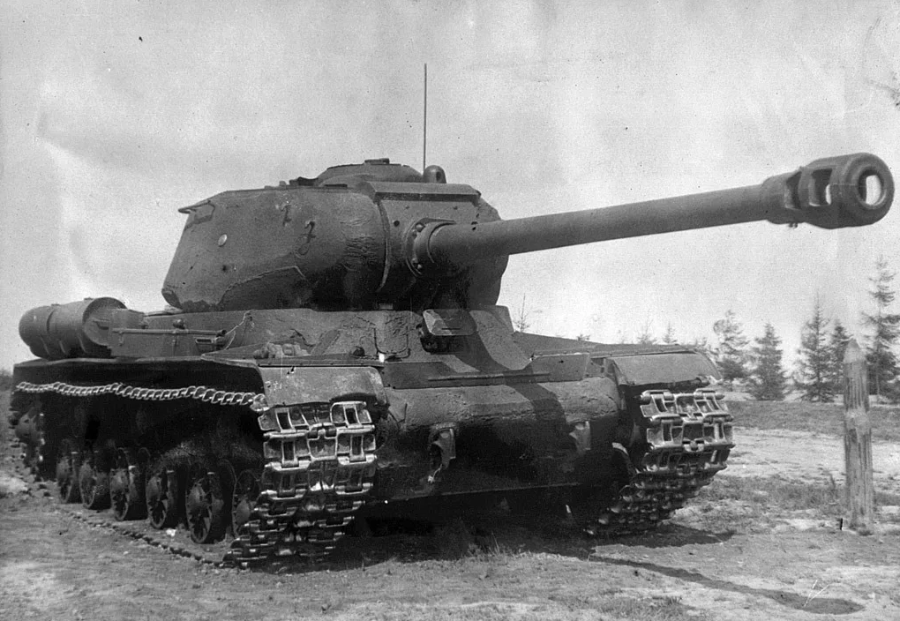

The IS-2 (Iosif Stalin 2) was a Soviet heavy tank introduced in 1944 as an upgrade to the IS-1, designed to counter Germany’s Tiger and Panther tanks. It was developed by the Chelyabinsk Kirov Plant and named after Soviet leader Joseph Stalin. Weighing around 46 tons, the IS-2 combined heavy armor, a powerful gun, and relatively good mobility for its class. It first saw combat in early 1944, playing key roles in the battles for Berlin and Königsberg. The IS-2 became a symbol of Soviet armored power — combining firepower, armor, and psychological impact — and influenced postwar heavy tank designs like the IS-3 and T-10.

- Characteristics:
- Type: Heavy tank
- Weight: 46 tons
- Crew: 5
- Armament: 122mm D-25T gun; 3 x 7.62mm DT machine guns
- Speed: 37 km/h